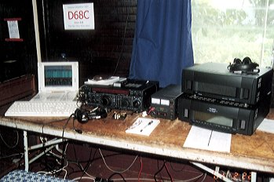

Flash ! DX
D68C Comoros 2001
【 Back Issues Mar.2001】 TIME:UTC(JST-09:00) Report from JA1RJU (PM95sq)
31.Mar.2001(15:00d) *ZL-TV 00:00- 45.24/25/26-- *VK-TV 00:00- 46.172/240 -- *CE-FM 01:30 47.900 -- weak
|
◎ 季節はずれの"雪"で冬に逆戻りした様な関東地方だが、今日はコンデションも夜まで落ち込んだまま。
夕方から深夜までFBなコンデションが続いても、翌朝には僅かに弱いVK/ZLのTVが残る程度で朝の南米のオープンに結びつくコンデションとはならない。
◎ JJY(短波帯標準電波)QRT |
30.Mar.2001(15:00j)
*ZL-TV 00:30- 45.24/25/26--
*VK-TV 01:00- 46.172/240 --
FK1TK 07:15 50.110/120 SSB
3D2TC 07:43 50.110/115 SSB
FK8CA 07:50 50.110 CW
FW5ZL 08:25 50.110 CW
UK9AA 08:25 50.106 CW SC -09:30z Uzbekistan
VK8RAS 09:30- 50.047 CW Beacon
P29BPL 09:30- 50.029 CW Beacon
V73SIX 09:30- 50.014 CW Beacon
V73AT 09:45 50.110 SSB
H40RW 09:45 50.110/120 SSB
VK4FNQ 09:51 50.110 SSB
3D2AG/P 09:54 50.105 SSB
FW5ZL 09:55 50.120 SSB
JY9NX 09:57 50.106 CW/SSB SC
VK8VF 12:20- 50.057 CW Beacon
VK4ABP 12:20- 52.347 CW Beacon
VK2ZXC 12:29 50.110 CW/SSB
VK3DUT 12:35 50.110 SSB
VK3SIX 12:46 50.115 SSB
VK4CP 12:47 50.110 SSB
VK5ZBK 12:50 50.110 SSB
VK4KK 12:50 50.110 SSB
VK4ABW 12:52 50.110 SSB
VK4CV 12:55 50.110 SSB
VK5DK 13:05 50.125 SSB
VK3XQ 13:06 50.125 SSB
VK3EK 13:13 50.125 SSB
KH2VF 13:15 50.130 SSB QSL JE1HJA
VK4PU 13:45 50.120 CW
4W/VK2QF 13:49 50.090 CW
VK5PO 14:14 50.097 CW
4W/VK2QF 14:50 50.115 SSB
VK6IP 15:12 50.106 CW
| ◎ 日中のコンデションは昨日よりも落ち込んでいた。夕方になってFK、3D2など太平洋方面が上昇、 この入感と平行して南西方向(約220度)のスキャッターでUK9AA、JY9NXなど西アジアが入感してきた。 ウズベキスタン(UK=Uzbekistan)は6mで初のQSO。 夜間の南太平洋、VK方面は今日も相変わらず強力。 |
29.Mar.2001(15:00j)
*VK-TV 23:30- 46.172/240 --
*ZL-TV 23:30- 45.24/25/26--
VK4JH 23:58 50.110 CW
VK4AFL 00:27 50.110 SSB
VK4BRG 00:30- 50.077 CW Beacon
VK8VF 00:30- 50.057 CW Beacon
VK4AHW 00:52 50.110 SSB
VK4CV 00:54 50.110 SSB
VK8RAS 00:55- 50.047 CW Beacon
VK4APG 01:05 50.109 CW
VK4PU 01:17 50.104 CW
VK2CHR 03:32 50.110 SSB
VK2ZXC 03:33 50.110 SSB
VK4ABW 04:34 50.110 SSB
VK4CXQ 04:42 50.110 SSB
FK1TK 05:11 50.110/140 SSB
FK8VHM 08:20 50.120 CW
H40RW 08:20 50.113 CW
ZL3TY 08:24 50.102/110 CW
VK4WDM 08:30 50.110 SSB
VK3DUT 08:34 50.110/155 SSB
VK4CP 09:03 50.115 SSB
VK8RAS 12:50- 50.047 CW Beacon
VK8VF 12:50- 50.057 CW Beacon
VK4RIK 12:50- 52.445 CW Beacon
VK4ABP 12:50- 52.347 CW Beacon
P29BPL 12:50- 50.029 CW Beacon
4W6UN 12:50- 50.097 CW Beacon
V73SIX 12:50- 50.014 CW Beacon
VK3KME 12:56 50.132 SSB
VK2APG 12:58 50.145 SSB
VK3DQJ 13:00 50.170 SSB
VK3JWO 13:02 50.168 SSB
VK2CHR 13:03 50.140 SSB
VK3XQ 13:04 50.123 SSB
VK9KCP 13:08 50.110 CW
VK4ABW 13:10 50.110 CW
4W/VK2QF 13:15 50.090 CW
VK5ZK 13:36 50.128 SSB
VK3AMK 13:36 50.097 RTTY
9M6BAA 13:37 50.114 CW
XV3JAA 13:50 50.088 RTTY QSL via JA1TAA
VK6AOM 14:04 50.116 SSB
DU1EV 14:41 50.107 CW
|
◎ 3月20日頃から始まった活発な太陽活動の影響で、6mは一時的にコンデションの上昇が続いている。
今日の日中は、ノイズも多くDXの信号もさほど強力ではなかったが、
夕方から夜間にかけてニュージーランドからオーストラリア南部が強力に入感、賑わった。 4W(East Timor)からVK2QF・Nevが4W/VK2QFのコールサインでQRVを始めた。 運用周波数はCWが50.090MHz(受信=UP5→Tune down)、SSBは50.135MHz(受信=50.150→140MHz)。QSLはSAE+IRC 2枚以上でダイレクトのみ。 運用は4月5日までの予定。 |
28.Mar.2001(15:00f)
*VK-TV 00:00- 46.172/240 --
*ZL-TV 00:00- 45.24/25/26-- weak
*9M-TV 08:00- 48.240/260 --
FW5ZL 08:50 50.120 CW
3D2AG/P 09:20 50.105 CW/SSB
FK8CA 09:30 50.110 CW
VK8RAS 09:30- 50.047 CW Beacon
VK8VF 09:30- 50.057 CW Beacon
P29BPL 09:30- 50.029 CW Beacon
V73SIX 09:30- 50.014 CW Beacon
VK4ZJR 09:32 50.110 SSB
VK4FNQ 09:44 50.110 SSB
V73AT 10:28 50.110 CW
VK4CXQ 10:30 50.110 CW
VK8MS 12:07 50.110 CW
VK8VF 12:07- 50.057 CW Beacon
VK4RIK 12:07- 52.445 CW Beacon
VK9KCP 13:53 50.110 CW
27.Mar.2001(15:00g)
*VK-TV 23:30- 46.172/240 --
*ZL-TV 23:30- 45.24/25/26--
VK8RAS 05:30- 50.047 CW Beacon
*9M-TV 06:00- 48.240/260 --
VK6AOM 06:23 50.110 SSB
FK8CA 08:05 50.110 CW
FW5ZL 09:00 50.120 SSB/CW
5W1SA 09:30 50.130 CW
H40RW 09:31 50.110/112 CW
VK8VF 11:00- 50.057 CW Beacon
VK4ABP 11:00- 52.347 CW Beacon
P29BPL 11:00- 50.029 CW Beacon
VK4BRG 11:00- 50.077 CW Beacon
26.Mar.2001(15:00k)
*VK-TV 03:00- 46.172/240 --
*ZL-TV 03:00- 45.24/25/26-- weak
*9M-TV 06:00- 48.240/260 --
VK8RAS 06:35- 50.047 CW Beacon
VK4ABP 06:35- 52.347 CW Beacon
P29BPL 06:35- 50.029 CW Beacon
9M6BAA 06:54 50.107 CW
9M2TO/B 06:55- 50.005 CW Beacon
VK4ABW 07:01 50.110 CW
VK4CXQ 07:03 50.110 CW
3D2AG/P 08:18 50.104 CW/SSB
FK8CA 08:24 50.110 CW
9M6BAA 08:30 50.102 CW
FW5ZL 08:45 50.120 SSB
VK4KK 09:12 50.110 CW
H40RW 09:40 50.110/103 CW Temotu Is. QSL via ZL1AMO
V73AT 09:43 50.110 CW
VK4CP 09:44 50.110 CW
P29BPL 09:45- 50.029 CW Beacon
VK8RAS 12:25- 50.047 CW Beacon
VK4ABP 12:25- 52.347 CW Beacon
VK8VF 12:25- 50.057 CW Beacon
4W6UN 12:30- 50.097 CW Beacon
V73AT 12:37 50.110 SSB/CW
VK4APE 12:39 50.110/160 SSB
VK4APG 12:51 50.110 CW
V73SIX 13:00- 50.014 CW Beacon
9V1JA 13:12 50.110 CW
YB0CBI 13:27 50.111 SSB
VK9KCP 13:29 50.105 SSB Cocos Keeling Is. QSL via SP9EVP
9M6BAA 14:05 50.126 SSB
|
◎ HF帯では3月中旬からアクテイブにQRVしていたTemotu Is.のH40RW(OP.ZL1AMO・Ron)がようやく6mにも出てきた。
今日のH40RWは、最近良く入感しているFW5ZL(Wallis)やRotuma Is.の3D2AG/Pに比べて、信号はさほど強くはなかったが、
ハイスピードのCWでJAのパイルを捌いていた。 RonはJAから贈られたIC-706と4elでQRVしている。Temotu Is.からの運用は1999年4月のH40OO (OP・JK7TKE)以来。 Cocos Keeling IsからQRVしているVK9KCP(QSL.SP9EVP)は、100Wと3m高のダイポールでの運用ながら良く聞こえている。 |
25.Mar.2001(15:00e)
*VK-TV 00:00- 46.172/240 --
*9M-TV 03:00- 48.240/260 --
FK8HA 08:05 50.120 SSB
XV3AA 08:10 50.135 SSB
FW5ZL 08:15 50.130 SSB
KH8/N5OLS 08:20 50.113 CW
VK4AHW 08:30 50.142 SSB
V73SIX 09:25- 50.014 CW Beacon
VK8RAS 09:25- 50.047 CW Beacon
VK4ABP 09:25- 52.347 CW Beacon
VK8VF 09:25- 50.057 CW Beacon
FO5RA 09:34 50.113 CW
FW5ZL 09:50 50.130 SSB
3D2AG/P 10:14 50.105 CW
P29BPL 12:30- 50.029 CW Beacon
4W6UN 12:30- 50.097 CW Beacon
24.Mar.2001(15:00h)
*VK-TV 00:00- 46.172/240 --
*9M-TV 03:00- 48.240/260 --
*ZL-TV 03:00- 45.24/25/26--
VK8RAS 03:30- 50.047 CW Beacon
VK4ABP 03:30- 52.347 CW Beacon
9M2TO/B 03:35- 50.005 CW Beacon
V73SIX 01:50- 50.014 CW Beacon
ZL2KT 04:18 50.110 SSB
V73GOD 04:23 50.110/115 SSB
9M6BAA 05:30 50.120/126 SSB
9V1JA 08:22 50.115 CW
5W1SA 08:43 50.110 CW
VK4FNQ 09:39 50.110 SSB
VK8RAS 09:40- 50.047 CW Beacon
VK4RIK 09:40- 52.445 CW Beacon
VK4ABW 09:43 50.110 SSB
VK4JH 09:51 50.110 CW
VK8VF 12:55- 50.057 CW Beacon
P29BPL 12:55- 50.029 CW Beacon
4W6UN 12:55- 50.097 CW Beacon
23.Mar.2001(15:00i)
*VK-TV 00:00- 46.172/240 --
*ZL-TV 03:00- 45.24/25/26--
VK4NW 03:41 50.110 SSB
VK4ABW 03:42 50.110 SSB
VK4BRG 03:42- 50.077 CW Beacon
VK8RAS 03:45- 50.047 CW Beacon
VK6IP 04:03 50.110 CW
V73SIX 04:40- 50.014 CW Beacon
VK4AHW 04:45 50.110 SSB
*9M-TV 05:00- 48.240/260 --
VK6KZ/P 05:00 50.110 SSB
VK6RO 05:00 50.110 CW
VK4ABW 05:02 50.110 SSB
VK6AOM 05:06 50.133 SSB
VK4CXQ 05:16 50.110 SSB
9M6BAA 05:16 50.110 SSB
VK4ABP 05:16- 52.347 CW Beacon
VK4CV 05:19 50.110 SSB
VK4APG 05:19 50.110 SSB
VK4DB 05:21 50.110 SSB
VK4DMI 05:23 50.110 SSB
VK3DUT 05:45 50.110 SSB
ZL3TY 05:59 50.110 CW
ZL2TPY 06:19 50.110 SSB
VK4JH 08:54 50.110 CW
FK8CA 09:15 50.110 CW
XV3AA 09:19 50.130 SSB
VK4AHW 09:35 50.110 SSB
VK8VF 09:45- 50.057 CW Beacon
22.Mar.2001(15:00j)
*VK-TV 00:00- 46.172/240 --
*ZL-TV 00:00- 45.24/25/26--
ZL2TPY 01:48 50.110/130 SSB
PY2HN 01:50 50.105 SSB
V73SIX 01:50- 50.014 CW Beacon
KH6HME/B 01:50- 50.061.5 CW Beacon
PY2VA 01:55 50.110 SSB
PP5JD 01:55 50.132 SSB
*9M-TV 02:00- 48.240/260 --
KH6SX 02:13 50.110/103 CW
WH6O 02:16 50.130 SSB
CE3SAD 02:22 50.110 SSB
CE-FM 02:22- 47.900 FM
(CE4WJK 02:25 50.125 SSB JA6)
VK4CXQ 02:41 50.110 CW
9M6BAA 02:49 50.115 CW/SSB
VK4JH 03:19 50.110 CW/SSB
KH6SX 03:25 50.110 CW
HL5XF 03:37 50.110 CW
VK6IP 03:37 50.110 CW
LU8MB 03:44 50.110/155 SSB
PY2XB 03:48 50.103 CW
VK4ABP 04:13- 52.347 CW Beacon
VK4BRG 04:13- 50.077 CW Beacon
V73SIX 04:13- 50.014 CW Beacon
VR2XMT 06:58 50.115/110 SSB
9M2TO/B 07:10- 50.005 CW Beacon
9M6BAA 07:20 50.107 CW
VK6AOM 08:52 50.110 SSB
VK6RPH 08:50- 50.066 CW Beacon
VK4APG 09:04 50.110 CW
VK4WDM 09:09 50.110 SSB
VK4JH 09:12 50.110 CW
FW5ZL 09:31 50.120 SSB
3D2AG/P 09:41 50.105 CW
V73AT 10:24 50.120 SSB
P29BPL 11:50- 50.029 CW Beacon
VK8RAS 11:50- 50.047 CW Beacon
VK4ABP 11:50- 52.347 CW Beacon
VK4BRG 11:50- 50.077 CW Beacon
VK4RIK 11:50- 52.445 CW Beacon
VK8VF 11:50- 50.057 CW Beacon
VK5AYD 11:57 50.110 SSB/CW
VK4TZL 11:57 50.110 CW/SSB
4W6UN 12:20- 50.097 CW Beacon
DU1EV 13:09 50.102 CW
KH0XX/NH2 13:51 50.130 SSB
DU1/GM4COK 14:00 50.115 CW
9M6BAA 14:00 50.140/144 SSB
9M2/JI1ETU 14:03 50.120 SSB
VK4CXQ 14:45 50.110 CW
| ◎ お昼前後に久しぶりに南米が入感。地磁気嵐の発生でコンデションは"荒れ模様"だが、 太平洋方面から東南アジアの中距離の伝搬は暫く楽しめそう。 |
21.Mar.2001(15:00h)
*VK-TV 00:00- 46.172/240 --
VK2ZXC 00:25 50.110 SSB
VR2LC 05:42 50.110 CW
VK3DUT 08:12 50.110/130 SSB
VK3DQJ 09:07 50.110 SSB
VK3ATQ 09:11 50.110 CW
VK8RAS 09:50- 50.047 CW Beacon
VK3JOO 09:53 50.110 SSB
VK3SIX 09:55- 50.053 CW Beacon
VK3DQJ 10:00 50.110 CW
P29BPL 12:00- 50.029 CW Beacon
VK8VF 12:00- 50.057 CW Beacon
VK3BQS 12:05 50.110 SSB
VK4CXQ 12:22 50.110 CW
20.Mar.2001(15:00i)
*VK-TV 00:00- 46.172/240 --
*ZL-TV 00:00- 45.24/25/26--
*9M-TV 04:00- 48.240/260 --
VK8RAS 04:50- 50.047 CW Beacon
VK4BRG 04:50- 50.077 CW Beacon
VK4ZJR 05:03 50.110 SSB
V73SIX 05:50- 50.014 CW Beacon
FO5RA 08:20 50.110 CW
VK4BRG 09:00- 50.077 CW Beacon
VK4RIK 09:00- 52.445 CW Beacon
VK4WDM 09:09 50.110/125 SSB
3D2AG/P 09:23 50.110/105 SSB/CW
P29BPL 09:45- 50.029 CW Beacon
VK8RAS 09:45- 50.047 CW Beacon
VK4ABP 09:45- 52.346 CW Beacon
VK4FNQ 09:50 50.130 SSB
H44NC 11:20 50.110/130 SSB
VK8VF 13:30- 50.057 CW Beacon
19.Mar.2001(15:00g)
*VK-TV 02:00- 46.172/240 --
VK4BRG 03:40- 50.077 CW Beacon
VK4ABW 03:44 50.110 SSB
VK4AHW 03:47 50.110 SSB
*9M-TV 04:00- 48.240/260 --
VK6RPH 04:05- 50.066 CW Beacon
VK8RAS 04:05- 50.047 CW Beacon
VK4KK 04:06 50.110 SSB
VK6RO 04:06 50.110 CW
VK6KZ 05:17 50.110 SSB
VK6HK 06:58 50.110 SSB
VK6AOM 07:45 50.110 SSB/CW
VK6IP 08:03 50.110 CW
VK6KZ/P 09:05 50.110 CW
P29BPL 12:00- 50.029 CW Beacon
VK8VF 12:00- 50.057 CW Beacon
VK8RAS 12:00- 50.047 CW Beacon
4W6UN 12:10- 50.097 CW Beacon
VK4ABW 13:25 50.110 SSB
18.Mar.2001(15:00i)
*VK-TV 00:00- 46.172/240 --
*ZL-TV 00:00- 45.24/25/26--
KH6SX 02:43 50.110/103 CW
*9M-TV 04:00- 48.240/260 --
VK4BRG 04:40- 50.077 CW Beacon
VK8RAS 04:40- 50.047 CW Beacon
VK4ABP 04:40- 52.346 CW Beacon
VK6IP 05:03 50.110 CW
VK4WDM 05:38 50.110 SSB
V73SIX 06:20- 50.014 CW Beacon
DU1EV 07:55 50.104 CW
XV3AA 08:14 50.110/130 SSB
3D2AG/P 10:40 50.105 CW Rotuma Is.
P29BPL 11:50- 50.029 CW Beacon
VK8VF 11:50- 50.057 CW Beacon
VK8RAS 11:50- 50.047 CW Beacon
VK8KTC 11:50 50.130 SSB
VK4FNQ 12:02 50.110/115 SSB
9M6SMC 12:02- 50.014.4 CW Beacon
4W6UN 12:10- 50.097 CW Beacon
DU1/GM4COK 12:38 50.110 CW/SSB
YF1OO 12:43 50.110 SSB/CW
VK4ABW 13:26 50.110/115 SSB
17.Mar.2001(15:00k)
*VK-TV 00:00- 46.172/240 --
*CE-FM 01:45- 47.900 --
*9M-TV 03:00- 48.240/260 --
VK2HO 03:37 50.110 SSB
VK4PU 03:44 50.110/160 SSB
VK4BRG 03:55- 50.077 CW Beacon
VK6IP 04:35 50.110 CW
VK8RAS 04:50- 50.047 CW Beacon
VK4ABP 04:50- 52.346 CW Beacon
VK4CXQ 05:12 50.110 CW
V73SIX 05:16- 50.014 CW Beacon
VK6JJ 05:57 50.100 CW
VK6RPH 06:00- 50.066 CW Beacon
VK6RBU 06:00- 50.306 CW Beacon
VK6ZDP 07:19 50.110/140 SSB
VK6WD 07:20 50.115 CW
VK6RO 07:24 50.110 CW
VK6AOM 07:43 50.110/115 SSB
EY8MM 07:56 50.110 SSB/CW SC 220deg
VK6IP 07:58 50.110 SSB
VK6TQ 08:07 50.110 SSB
DU1MS 08:39 50.160 SSB/CW
XV3AA 09:04 50.110/130 SSB
VK4CXQ 09:05 50.110 SSB
VK4FNQ 09:10 50.130 SSB
5W1SA 09:25 50.140 CW
3D2AG/P 11:20 50.105 CW/SSB
VK8RAS 13:00- 50.047 CW Beacon
9M2/JI1ETU 13:00- 50.085 CW Beacon
9M6SMC 13:00- 50.014.4 CW Beacon
P29BPL 13:00- 50.029 CW Beacon
VK8VF 13:00- 50.057 CW Beacon
4W6UN 13:00- 50.097 CW Beacon
VK4RIK 13:00- 52.445 CW Beacon
VK4ABP 13:00- 52.346 CW Beacon
DU1EV 13:20 50.160/105 SSB/CW
VK4CP 13:50 50.110 CW
YC1MH 13:54 50.130 SSB
VK8MS 14:36 50.110 SSB
V63KX 14:43 50.115 CW
16.Mar.2001(15:00i)
*VK-TV 00:00- 46.172/240 --
*9M-TV 03:00- 48.240/260 --
VK4NW 03:53 50.110/145 SSB
VK8RAS 04:00- 50.047 CW Beacon
V73SIX 04:00- 50.014 CW Beacon
VK4ABP 04:00- 52.346 CW Beacon
VK4BRG 04:00- 50.077 CW Beacon
VK4ZEK/MM 04:13 50.110/120 SSB
VK4AHW 05:13 50.110/135 SSB
VK4LR 05:13 50.110 SSB
VK2CHR 05:14 50.110 SSB
FK1TK 05:19 50.110/120 SSB
VK4KR 05:21 50.110 SSB
VK2YFB 05:24 50.110 SSB
VK4RGG 05:30- 50.057 CW Beacon
VK2DN 05:34 50.110 SSB
VK4ABW 05:34 50.110 SSB
VK6JJ 05:55 50.100 CW
VK4KK 05:58 50.120 SSB
VK6RPH 06:00- 50.066 CW Beacon
VK6RBU 06:00- 50.306 CW Beacon
VK6AOM 06:05 50.110 SSB
VK6IP 06:13 50.110 CW
VK6RO 06:27 50.110 CW/SSB
VK4CXQ 06:58 50.110/105 CW
V73SIX 09:35- 50.014 CW Beacon
P29BPL 09:35- 50.029 CW Beacon
FK8CA 09:38 50.110 CW
FO5RA 09:48 50.115 CW/SSB
3D2AG/P 10:00 50.103 CW
V73SIX 12:00- 50.014 CW Beacon
VK8VF 12:00- 50.057 CW Beacon
4W6UN 12:00- 50.097 CW Beacon
VK4RIK 12:35- 52.445 CW Beacon
VK4JH 12:55 50.110 SSB/CW
V63KX 13:00 50.120 CW
WH7C/DU1 13:02 50.125 SSB
DU1ZV 13:04 50.130 SSB
XV3AA 13:27 50.120 SSB
VK4WDM 14:27 50.110 SSB
VK4ABW 14:35 50.120 SSB
15.Mar.2001(15:00i)
*ZL-TV 00:00- 45.24/25/26-- weak
*VK-TV 00:00- 46.172/240 --
VK4BRG 03:30- 50.077 CW Beacon
VK2HO 03:30 50.110 SSB
VK4AHW 03:33 50.110 SSB
VK8RAS 03:38- 50.047 CW Beacon
VK2ZXC 04:36 50.110 SSB
*9M-TV 05:00- 48.240/260 --
*BY-TV 05:00- 49.750 --
V73SIX 05:20- 50.014 CW Beacon
VK4ABP 05:25- 52.346 CW Beacon
VK4AFL 05:28 50.098 CW
VK4CXQ 06:12 50.110 CW
VK6RPH 06:50- 50.066 CW Beacon
VK6RBU 06:50- 50.306 CW Beacon
VK6AOM 06:50 50.110 SSB
9M2TO/B 07:00- 50.005 CW Beacon
VK6JJ 07:16 50.110/180 CW/SSB
5W1SA 07:58 50.110/130 CW
3D2AG/P 08:35 50.105 CW/SSB Rotuma I.
VK4SSB 09:29 50.115 CW
V73SIX 09:30- 50.014 CW Beacon
P29BPL 11:50- 50.029 CW Beacon
VK8VF 11:50- 50.057 CW Beacon
VK4ABW 12:04 50.110 SSB
VK8MS 12:13 50.110 SSB
VK4RIK 12:45- 52.445 CW Beacon
4W6UN 12:45- 50.097 CW Beacon
|
◎ 予想に反してこの春のコンデションは上昇して来ない。夜間のロングパスで中米が入感した昨年とは大きな違い。
サイクルのピークが過ぎたとは言え、落ち込みは激しい。 夕方から久しぶりに5W1SA(Samoa)と3D2AG/A(Rotuma I)が強力に入感。 |
14.Mar.2001(15:00d)
*VK-TV 01:00- 46.172 -- weak
*VK-TV 06:00- 46.172/240 --
*9M-TV 06:00- 48.240/260 --
*BY-TV 06:00- 49.750 --
9M2TO/B 06:20- 50.005 CW Beacon
V73SIX 06:20- 50.014 CW Beacon
KH6HME 06:20- 50.061 CW Beacon
VK4ABW 06:53 50.110 SSB
KH6SX 07:19 50.110 CW
VK4APG 07:30 50.110 CW
VK8RAS 07:50- 50.047 CW Beacon
VK4JH 07:52 50.110 CW
VK2BA 07:54 50.110 SSB
VK4CV 07:57 50.110 SSB
VK4CH 08:05 50.110 SSB
VK4KK 08:11 50.110/120 SSB
9M2TO/B 08:30- 50.005 CW Beacon
VK4CP 09:08 50.110 CW
V73AT 11:59 50.110 CW
VK4FNQ 12:32 50.110 SSB
13.Mar.2001(15:00d)
*VK-TV 00:00- 46.172/240 --
VK5RO 05:05 50.110 SSB
VK4AHW 05:10 50.110 SSB
VK4KK 05:12 50.110 SSB
VK3DQJ 05:19 50.110/125 SSB
*9M-TV 05:30- 48.140/260 --
XV3AA 05:50 50.110/130 SSB
VK6JJ 06:33 50.120 CW
VK4JH 09:16 50.130 SSB
VK4WDM 09:24 50.110 SSB
VK8RAS 12:30- 50.057 CW Beacon
VK8VF 12:30- 50.057 CW Beacon
4W6UN 12:30- 50.097 CW Beacon
12.Mar.2001(15:00e)
*VK-TV 05:30- 46.172/240 --
V73SIX 06:00- 50.014 CW Beacon
VK6RPH 06:00- 50.066 CW Beacon
VK8RAS 06:00- 50.047 CW Beacon
VK6ZKO 06:42 50.120 SSB
VK4ADC 07:39 50.110 SSB
VK6RO 07:48 50.110 CW
VK4ADC 07:39 50.110/130 SSB
VK6RO 07:48 50.110 CW
VK4AHW 07:58 50.110 SSB
VR2XVD 08:10 50.110 SSB
BQ9P 08:14 50.110/130 SSB/CW
VK4WDM 08:20 50.110 SSB
VR2LC 09:12 50.110 CW
(5B4AGM 09:53 50.110 CW JA6)
VK4ABW 12:30 50.120 SSB
VK8VF 12:30- 50.057 CW Beacon
4W6UN 12:30- 50.097 CW Beacon
VK4JH 12:46 50.110 CW
11.Mar.2001(15:00f)
*ZL-TV 02:30- 45.24/25/26-- weak
*VK-TV 02:40- 46.172/240 --
XV3AA 06:30 50.110/165 SSB
BQ9P 07:45 50.130 SSB
VK6RPH 07:50- 50.066 CW Beacon
VK6RBU 07:50- 50.306 CW Beacon
VK4APG 07:54 50.130 CW/SSB
VK6UMG 07:59 50.145 SSB
4F1OZ 08:05 50.100 SSB
VK2QF 08:08 50.106 CW
VK2APG 08:10 50.210 SSB
VR2ZNC 08:14 50.170 SSB
VR2KR 08:20 50.115 CW
VR2BG 08:21 50.105 CW
VK6ADI 08:29 50.160 SSB
VK6AKT 09:12 50.110 SSB
VK4JH 09:21 50.110 CW
P29BPL 11:50- 50.029 CW Beacon
VK8RAS 11:50- 50.047 CW Beacon
VK8VF 11:50- 50.057 CW Beacon
VK6RPH 11:50- 50.066 CW Beacon
VK6RBU 11:50- 50.306 CW Beacon
VK4ABP 11:50- 52.346 CW Beacon
VK2QF 12:06 50.110 CW
BG7OH 12:43 50.150 SSB
(YV4AB/B 12:40- 50.026.5 CW Beacon)
BX2AB 12:50 50.107 CW
YC1MH 12:52 50.120 SSB
VR2XMT 12:52 50.160 SSB
VK4SSB 13:06 50.110 CW
VR2LC 13:13 50.115 CW
BV4VJ 13:15 50.120 SSB
VR2IL 13:16 50.140 SSB
VR2ZGC 13:18 50.150 SSB
VR2XRW 13:21 50.170 SSB
BQ9P 13:21 50.125 SSB/CW
VK4ABW 14:50 50.110 SSB
VK4CP 14:50 50.110 SSB/CW
10.Mar.2001(15:00e)
*ZL-TV 23:40- 45.24/25/26-- weak
*VK-TV 23:40- 46.172 --
*EU-TV? 23:40- 48.250 -- L.P 150
9H1BT 23:55 50.115 SSB/CW
9H1XT 23:57 50.107 CW
IT9RZR 23:59 50.106 CW
9H1CG 00:00 50.100 CW
*VK-TV 01:00- 46.172/240 --
*CE-FM 01:30- 47.900 FM
FK1TK 03:49 50.110 SSB
VK4PU 04:18 50.110 CW
DU1EV 06:52 50.110 SSB
XV3AA 07:30 50.130 SSB
VK8RAS 07:38- 50.047 CW Beacon
DS5AHE 07:40 50.110 SSB
KH2/JL1XYU 08:00 50.140 SSB
VK4JH 08:48 50.120 SSB
(5B4AGM 09:10 50.110 CW SC)
FR1AN 09:29 50.125 SSB
(9H1PA 09:49 50.103 CW SC)
(4X1RF 10:06 50.105 CW SC)
VK8VF 13:40- 50.057 CW Beacon
4W6UN 13:40- 50.097 CW Beacon
YF1OO 13:47 50.110 CW
VK4CXQ 13:54 50.110 CW
| ◎ 一昨日の南米に続いて、今日は早朝からロングパスのヨーロッパがオープン。 48.250MHzの強力なEU？のTVの入感に続いて聞こえてきたのは9H1's、IT9RZRなどお馴染みの局だけ。 午後から近場のKH2/KH0、XV3、DUに続いて、夕方にFR1AN、スキャッターで5B4、4X、9H1の入感もリポートされたが、 この入感は西日本が中心。 |
09.Mar.2001(15:00e)
*ZL-TV 00:00- 45.24/25/26-- weak
*VK-TV 00:00- 46.172/240 --
FK1TK 03:55 50.110 SSB
V73SIX 04:15- 50.014 CW Beacon
VK4WTN 05:20 50.110 SSB
VK4LR 06:36 50.110 SSB
VK4AFL 06:39 50.110 SSB
VK4KK 06:42 50.110 SSB
FO3BM 07:55 50.110/130 SSB
V73SIX 10:15- 50.014 CW Beacon
P29BPL 12:00- 50.029 CW Beacon
VK8VF 12:00- 50.057 CW Beacon
4W6UN 12:00- 50.097 CW Beacon
VK4JH 12:10 50.110 CW/SSB
08.Mar.2001(15:00h)
*ZL-TV 01:00- 45.24/25/26--
*VK-TV 01:00- 46.172/240 --
FK1TK 01:35 50.110/120 SSB
*CE-FM 01:50- 47.900 FM
PY5CC 01:51 50.115 SSB
LU9HUP 01:52 50.120 SSB FF76
LU7FN 01:57 50.135 SSB FF97
CE3RR 02:00 50.125 SSB FF46
LU2MHP 02:04 50.140 SSB FF57
LU2NI 02:15 50.115 SSB
PY5CC 02:19 50.110 SSB
*9M-TV 02:20- 48.240 --
9M2TO/B 02:25- 50.005 CW Beacon
LW4HBN 02:32 50.115 SSB
V73SIX 03:50- 50.014 CW Beacon
XV3AA 07:48 50.110/130 SSB ex 3W3SK(Kuroda) QSL via JA6UHG
XV3AA 08:50 50.130 SSB
VK4APN 09:20 50.110 CW
VK4KK 09:40 50.110 CW
P29BPL 13:00- 50.029 CW Beacon
VK8VF 13:00- 50.057 CW Beacon
VK8RAS 13:00- 50.047 CW Beacon
4W6UN 13:00- 50.097 CW Beacon
| ◎ 午前11時(02:00z)少し前からPY、LU、CEが入感。信号も強力でこの春の本格的な南米の入感だった。 この時間帯に南米からCW0Z(CX)、ZP5YW、CP1FQなどのQRVもリポートされていたが、JAでは確認出来なかった。 |
07.Mar.2001(15:00d)
*ZL-TV 00:00- 45.24/25/26--
*VK-TV 00:00- 46.172/240 --
*9M-TV 03:00- 48.240/260 --
9M6SMC 03:00- 50.014.4 CW Beacon
9M2TO/B 03:00- 50.005 CW Beacon
VK4WDM 09:37 50.110 SSB
P29BPL 13:00- 50.029 CW Beacon
VK8VF 13:00- 50.057 CW Beacon
4W6UN 13:00- 50.097 CW Beacon
N7ET/DU7 13:07 50.110/103 CW
VK4CXQ 13:12 50.103/105 CW
06.Mar.2001(15:00e)
*ZL-TV 00:00- 45.24/25/26--
*VK-TV 00:00- 46.172 --
VK4CH 09:00 50.110/120 SSB
VK4WTN 09:00 50.110/120 SSB
VK4KK 09:55 50.110 CW
VK4FNQ 09:57 50.110/130 SSB
YB5QZ 10:00 50.110 CW
VK4JH 10:01 50.110 CW
BQ9P 13:00 50.130 SSB
DU1EV 14:26 50.105 CW
|
◎ [D68C 6mの装置] 当初6m専用に用意されていた英国製のリニアーアンプ(3CX800、MAX=800W)は、運用開始直後に電源のトラブルで使用不能になり、 以降はFT-847(100W)単体での運用に切替えられた。3月19日のJAとの初QSOはこの"悪条件"の下で行われた。 JAとのQSO成功と、HF帯での運用が一段落した事もあり、この日から6m専用にVL-1000の使用が決定、 FT-920とVL-1000での運用に戻された。JAとの2度目のオープン(2月25日)はこのライン(約600W)で行われた。 |


D68C・Comorosで使われた6mのシャック(FT-920+VL-1000)とアンテナ(6el)。
05.Mar.2001(10:00b)
|
◎ 2月9日から2月28日まで行われたD68C・Comorosの運用を終え、英国経由で今日(3/5日)帰国しました。
期間中ご協力頂きました各局に感謝します。(De JA1RJU)
D68Cを最終日まで運用した14局(期間中の運用総メンバーは26局)は3月1日コモロを出発、モーリシャス(3B8)経由で無事英国に戻りD68CのDX Peditionは全日程を終えました。
英国経由で帰る9H1EL(マルタ)、DL7AKC(独)、UT8LL(ロシア)、W3WL、N7CQQ(米国)、JA1RJU(日本)を最後に全員がロンドンを離れ帰国しました。 |
01.Mar-04.Mar.2001(00:00a)
|
◎ D68C(Comoros)運用(08.Feb-28.Feb.2001) 02.Feb-04:Mar.2001はD68C運用のため"Flash DX"はお休みします。 D68CのDXpeditionの詳細は"D68C Comoros 2001"をご覧ください。(De JA1RJU)
|

D68C Homepageを参照。